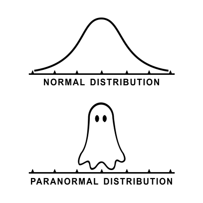

pnorm(2100, mean=1500, sd = 300) - pnorm(900, mean=1500, sd = 300)[1] 0.9544997
The normal distribution is used to describe the variability associated with sample statistics which are taken from either repeated samples or repeated experiments. The normal distribution is quite powerful in that it describes the variability of many different statistics such as the sample mean and sample proportions.
Turn to a neighbor and discuss your answers to the following questions. We will share out to the class after each one.
Board work following IMS 13.2
Follows IMS 13.3

pnorm(2100, mean=1500, sd = 300) - pnorm(900, mean=1500, sd = 300)[1] 0.9544997Variability of the data values (\(x\))
Variability of the sample statistic (e.g. \(\bar{x}\) or \(\hat{p}\))
The margin of error describes how far away observations are from their mean.
Often approximated as \(2 * SE\)
This example and data comes from IMS 13.6
stent30 <- openintro::stent30Consider an experiment that examined whether implanting a stent in the brain of a patient at risk for a stroke helps reduce the risk of a stroke. The results from the first 30 days of this study are summarized in the following table.
table(stent30$group, stent30$outcome) |> addmargins()
no event stroke Sum
control 214 13 227
treatment 191 33 224
Sum 405 46 451table(stent30$group, stent30$outcome) |> prop.table(margin=1) |>round(digits=2)
no event stroke
control 0.94 0.06
treatment 0.85 0.15These results are surprising! The point estimate suggests that patients who received stents may have a higher risk of stroke: \(p_{trmt}−p_{ctrl}=0.090\).
The point estimate for the difference in proportions \(p_{trmt}−p_{ctrl}=0.090\) is a single point estimate, based on this single sample.
A point estimate is our best guess for the value of the parameter, so it makes sense to build the confidence interval around that value.
When the sampling distribution of a point estimate can reasonably be modeled as having a normal distribution, the point estimate we observe will be within 1.96 standard errors of the true value of interest about 95% of the time. Thus, a 95% confidence interval for such a point estimate can be constructed:
\[\mbox{point estimate} \pm 1.96 × SE\]
We can be 95% confident this interval captures the true value.
The conditions necessary to ensure the point estimate \(p_{trmt}−p_{ctrl}\) is nearly normal have been verified for you, and the estimate’s standard error is \(SE = 0.028\).
. . .
\[0.090 \pm 1.96×0.028 = (0.035,0.145)\]
We are 95% confident that implanting a stent in a stroke patient’s brain increased the risk of stroke within 30 days by a rate of 0.035 to 0.145.
⚠️ it’s incorrect to say that we can be 95% confident that the true value is inside the mean.

\(H_{0}\): Stents don’t work
\(H_{A}\): Stents reduce the risk of a stroke
\(H_{0}\): Patients who have a stent have the same risk of a stroke as patients who don’t have a stent
\(H_{A}\): Patients who have a stent have lower risk of a stroke as patients who don’t have a stent
\(H_{0}\): The proportion of patients with a stent who have a stroke is the same as the proportion of patients without a stent who have a stroke.
\(H_{A}\): The proportion of patients with a stent who have a stroke is different than the proportion of patients without a stent who have a stroke.
Let \(p_{trmt}\) be the proportion of patients with a stent who have a stroke, and \(p_{ctrl}\) be the proportion of patients without a stent who have a stroke
\(H_{0}: p_{trmt} = p_{ctrl}\)
\(H_{A}: p_{trmt} \neq p_{ctrl}\)
Let \(p_{1}\) be the proportion of patients with a stent who have a stroke, and \(p_{ctrl}\) be the proportion of patients without a stent who have a stroke
\(H_{0}: p_{trmt} - p_{ctrl} = 0\)
\(H_{A}: p_{trmt} - p_{ctrl} \neq 0\)
\[ Z = \frac{\mbox{point estimate - null value}}{SE}\]
. . .
\[ Z = \frac{(p_{trmt} - p_{ctrl}) - 0}{SE_{p_{trmt} - p_{ctrl}}} = \frac{.090}{.028} = 3.21 \]
. . .
\[ P(Z > 3.2) = .00068 \qquad \mbox{ (the p-value)}\]
. . .
If the true difference in proportions was 0, then the probability of observing a difference of 0.09 due to random chance is 0.00068.

We are 95% confident that implanting a stent in a stroke patient’s brain increased the risk of stroke within 30 days by a rate of 0.035 to 0.145.
Since the interval does not contain the null hypothesized value of 0 (is completely above 0), it means the data provide convincing evidence that the stent used in the study changed the risk of stroke within 30 days